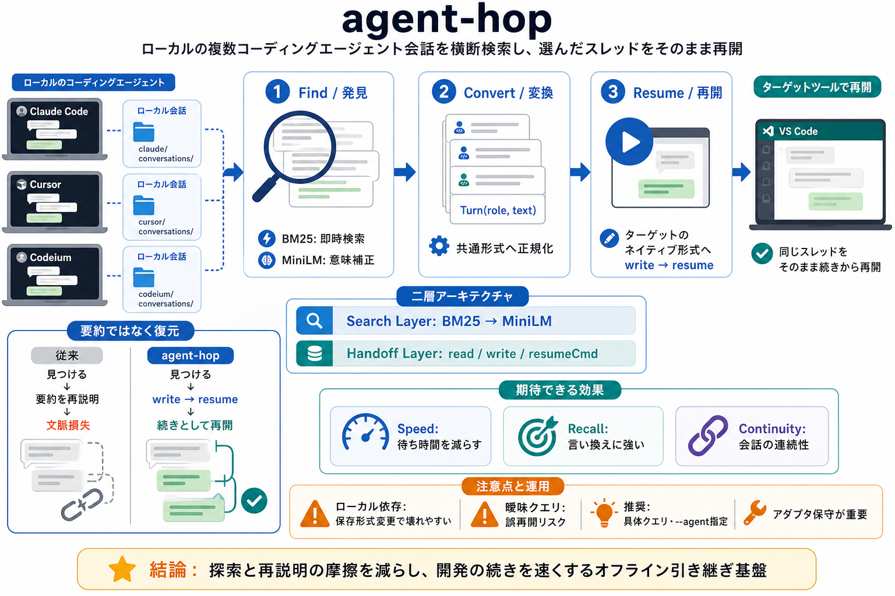

AGENT | definition in the Cambridge English Dictionary
### agent noun [C] (CAUSE) ## agent | Business English Your browser doesn't support HTML5 audio Your browser doesn't …

agent-hop / エージェント・ホップ
ローカルの複数コーディングエージェント会話を横断検索し、選んだスレッドを別ツールへ“そのまま”再開します。 （跨ツール・セッション引き継ぎ / session hop）
“どこにある？”の壁
会話は各エージェントがローカル保存する一方、保存形式・再開手順が異なります。 そのため「ツール名もディレクトリも曖昧」だと、復元までが遠回りになります。
BM25 や意味検索で「以前の会話」を見つける必要
見つけた内容を、相手ツールのネイティブ形式へ変換
引越しではなく、乗り換え
要約で再説明するのではなく、ターゲットツールの“書き戻し”によって実際の過去ターンを引き継ぎます。 （その会話を続ける / continue the thread）
字面スコア→意味補正で候補を絞る
共通 Turn（role, text）へ正規化
相手ツールの resumeCmd へ接続
二層で完結
agent-hop の中核は「検索レイヤ」と「ハンドオフレイヤ」の二層です。 どちらもローカル-firstで動きます。
Stage1: BM25（即時）→ Stage2: MiniLM 埋め込み（意味補正）
選んだセッションをターゲットのネイティブ形式へ変換して resume を実行
ハイブリッド検索
「表記揺れ」も「言い換え」も拾えるように、2段階で順位を作ります。
BM25: 表記揺れ・前方一致を含む高速スコア提示（即時）
MiniLM 埋め込み: ベクトルインデックスで意味的に順位調整
“見つけて続ける”手順
インタラクティブでピッカー選択も、スクリプト用の非対話モードも提供します。 （agent側から呼び出す想定もあり）
各アダプタが候補スレッドを列挙
履歴を読み、共通 Turn に正規化して相手形式へ書き戻し
選択したスレッドをターゲットツールで再開
要約 vs “復元”
要約再説明ではなく、アダプタ層で Turn を共通表現へ正規化し、ネイティブへ変換して復元します。
見つけ→要約を再説明→会話の連続性が弱くなる
見つけ→ターゲット形式へ write→resume で過去ターンを引き継ぐ
期待できる効果
「トピックは覚えているが、ツール名やパスが曖昧」でも、探索コストと再説明コストを下げます。
BM25 の即時提示で待ちを減らす
MiniLM で言い換え検索に強くなる
native resume で“続き”として再開
拡張はアダプタ中心
対応エージェント追加はアダプタ実装（listSessions / read / write / resumeCmd）で進める方針です。 （スケールしやすい / scalable）
共通インタフェースに合わせて履歴を扱う
検索・ハンドオフの核を保ちつつ、対応範囲だけ増やせる
地雷は“ローカル依存”
セッション保存形式や命名規則に依存するため、外部ツールの更新で壊れやすくなる可能性があります。 実装上の注意点が複数挙げられています。
onConflict で無視され、再構成が期待通りにならない可能性
パスのエンコード差（例: Claude Code の “-” 置換規則）
保存スキーマやイベント列の差で品質が落ち得る
運用上のガイド
非対話モードは自動選択ゆえに、曖昧クエリで誤ったセッションへ飛ぶリスクがあります。 （例: 「adobe」のような曖昧語）
具体クエリ、必要なら --agent 指定
ローカルファイル処理のため、共有PC等ではアクセス権に配慮
まとめ
agent-hop は、ローカルに散らばった会話を横断検索し、ターゲットツールのネイティブ形式へ変換して resume します。 （オフライン・引き継ぎ再開のインフラ）
探索と再説明の摩擦を減らし、開発継続を速くする
セッション形式の変化に備え、アダプタ保守と運用ルールが重要
参考情報: 性能指標、対応バージョン範囲、エラー時フォールバック、負荷（メモリ/ディスク）、セッション上限は未確定のため、導入前に確認推奨。 （missing metrics）
### agent noun [C] (CAUSE) ## agent | Business English Your browser doesn't support HTML5 audio Your browser doesn't …
pretium tincidunt lacus. [...] Derek Ting Derek Ting Jim Yung Marikah Baran Marikah Baran Dr. Angela Porter (as …
## Other uses [edit] [...] + Registered agent, in the US, receives service of process for a party in a legal action +…
Please help us improve our site! No thank you Cornell University insignia Cornell Law School Search Cornell …
An agent, in legal terminology, is a person who has been legally authorized to act on behalf of another person, group, o…